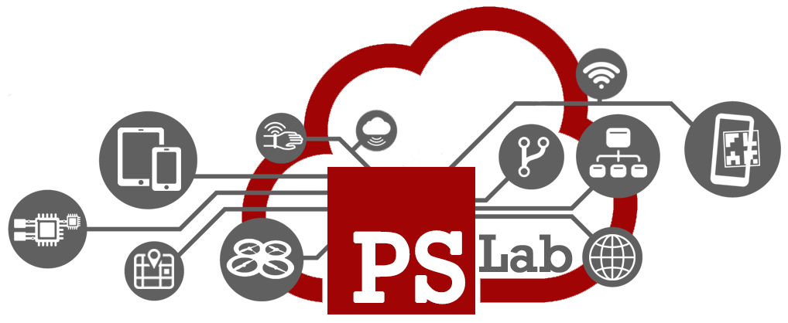
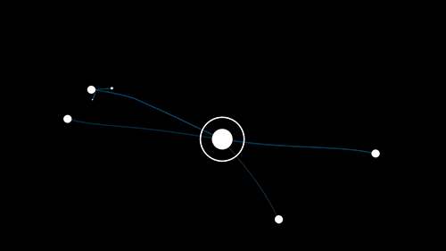
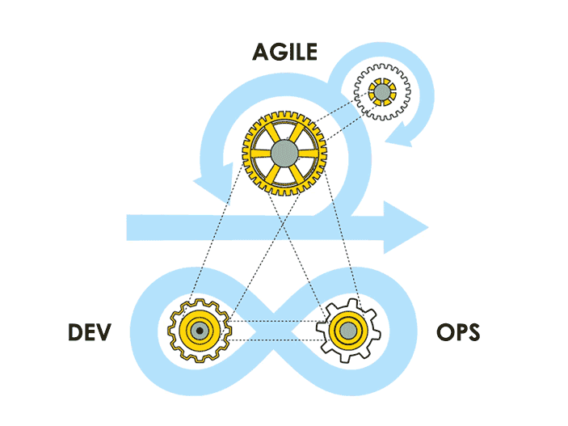
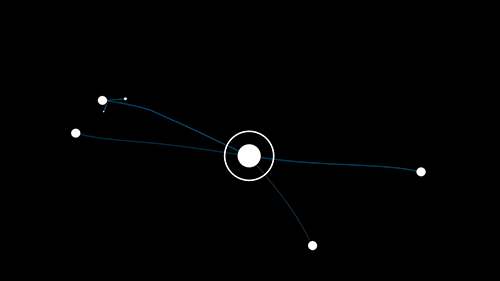
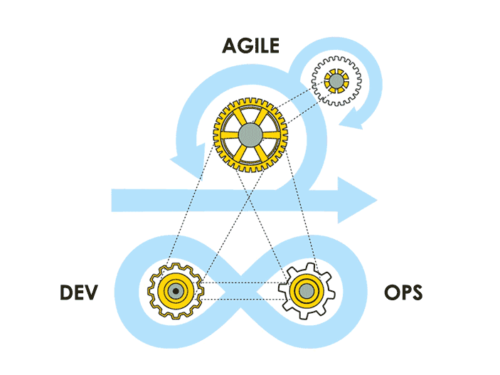

Pervasive Software lab
Dipartimento di Informatica - Scienza e Ingegneria Università di Bologna - Campus Cesena

Laboratorio di Ricerca
Il software come elemento pervasivo della realtà
Ingegnerizzazione di approcci ideati e studiati a livello di ricerca
Condivisione e riuso della conoscenza
Casi di studio real-world
Sistemi pervasivi complessi
naturali <—> human in the loop <—> artificiali


 



Biological cell differentiation

Genetic Regulatory Networks models

… as control software for robots
Pervasive Healthcare
Infrastrutture software IoT a supporto dell’attività clinica
- Personal Medical Digital Assistant Agents
- Digital Twin per Ospedale 4.0
Collaborazione con AUSL Romagna
- Progetto TraumaTracker
- Progetto T4C (Tracking for Care)
- Progetto CERERE e DIANA
Augmented Reality
Studio, Sperimentazione e Ingegnerizzazione di Sistemi Software Pervasivi orientati alla Realtà Aumentata
- Dotazione HW
- Tablet avanzati con supporto ARCore
- Smart Glasses (Vuzix m100/m300 e Epson Moverio BT-200)
- Visori per MR (Meta2)
- …
Mixed Reality Augmented Environments
Augmented Worlds e Infrastruttura MiRAgE
- Integrazione di tecniche Agent-based
Casi di Studio
- Museo della Regina, Cattolica
- Rocca delle Caminate, Meldola
- Ospedale Bufalini Cesena
Aggregate Computing
Area 4.0 (Gennaio 2020)
Laboratorio interdisciplinare ICT @ Campus Cesena
- Display interattivi 80”
- Research Meeting Areas
- Makers-oriented Space
Spazio dedicato all’ingegnerizzazione di ambienti di Mixed Reality
- Visori di AR/MR/VR avanzati
Tesi e Tirocini interdisciplinari